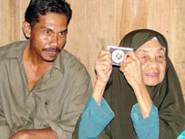

 |
| - AP photo. |
KUALA TERENGGANU: Perbezaan umur sebanyak 71 tahun tidak menghalang Muhamad Noor Che Musa, 33, dan Wook Kundor, 104, mendirikan rumah tangga kerana menganggapnya sebagai jodoh yang sudah ditentukan Ilahi walaupun agak pelik pada pandangan masyarakat.
Malah, Muhamad Noor yang masih bujang ketika menikahi Wook pada Februari lalu, berkata tiada apa yang menghairankan jika Allah memilih mereka sebagai suami isteri. Wook pernah berkahwin 20 kali sebelum bertemu jodoh dengan Muhamad Noor.
Dia juga mengakui tidak malu memperkenalkan isterinya kepada sesiapa yang bertanya kerana niatnya mengambil Wook sebagai suri hidupnya dilakukan dengan ikhlas dan jujur walaupun usia mereka jauh berbeza.
"Bagi mereka yang tidak faham, mungkin nampak ganjil tetapi saya mendapat ketenangan hidup di sisi Wook sejak kami berkahwin dua bulan lalu.
"Sebelum ini, saya sering merantau sejak berhenti daripada perkhidmatan tentera pada 1998. Sejak itu, kehidupan saya agak tidak menentu. Bagaimanapun, saya mendapat kerja di kilang papan di Kuala Berang, setahun lalu.
"Saya menumpang di rumah sewa Wook ketika itu. Saya tidak bayar satu sen pun. Sepanjang mendiami rumah itu, saudara-maranya selalu datang tetapi dia tinggal keseorangan. Saya simpati...," katanya kepada Harian Metro di sini, semalam.
Katanya, kisah percintaan mereka seperti diberikan petunjuk Allah kerana sebelum ini dia tidak pernah terfikir untuk berkahwin dengan Wook yang jauh lebih tua, tetapi itulah ketentuan jodoh.
"Pada awal perkenalan, saya hanya mahu mengambil tahu mengenai kehidupan Wook. Ia bermula daripada tegur-menegur. Saya kerap menyapa Wook ketika dia membersih halaman rumah.
"Begitu juga dengan Wook. Lama-kelamaan daripada simpati dan tegur-menegur, timbul pula rasa kasih dan saya berhasrat berkahwin dengannya supaya dapat jaga Wook.
"Saya tahu pandangan sinis masyarakat sejak dua bulan kebelakangan ini. Tapi saya mengahwini Wook bukan kerana harta. Dia tidak berharta," katanya sambil memandang isterinya dengan penuh kasih sayang.
Wook hanya tersenyum dengan pengakuan suaminya itu sepanjang temu bual wartawan Harian Metro dengan mereka, semalam.
Muhamad Noor berkata, harta isterinya hanyalah ilmu agama kerana Wook yang pernah ke Makkah, mengajar kanak-kanak di kampung itu mengaji sejak berusia 15 tahun.
"Isteri saya masih mengajar muqaddam dan al-Quran kepada kanak-kanak di kampung ini. Saya pun tumpang mendapat ilmu itu dan turut membantunya mengajar mengaji," katanya.
Muhamad Noor berkata, dia turut mengajar isterinya huruf rumi apabila mempunyai masa terluang dan keadaan itu membuatkan mereka suami isteri terhibur.
Sementara itu, Wook yang tidak mempunyai anak walaupun sudah berkahwin 21 kali termasuk dengan Muhamad Noor berkata, jodoh, rezeki dan ajal maut adalah ketentuan Allah dan sebagai hamba-Nya, dia tidak pernah terlintas berkahwin lagi.
"Mudah-mudahan perkahwinan kali ini berkekalan dan direstui.
"Saya meminta orang ramai melihat perkahwinan kami secara baik kerana kami tidak melakukan sesuatu yang dilarang Allah," katanya.
"Saya tidak berniat memusnahkan hidup Noor dan akan cari isteri sebaya dengannya supaya dia mempunyai zuriat.
"Saya tahu siapa diri ini. Saya hanya ingin menumpang kasih selagi ada hayat. Itu saja," kata Wook Kundor, 104, yang mengahwini Muhamad Noor Che Musa, lelaki bujang berusia 33 tahun, Februari lalu.
Wook berkata, dia dan suami juga menyedari pandangan serong masyarakat yang membuat pelbagai andaian mengenai perkahwinan mereka, namun semua itu diterimanya dengan tabah.
Muhamad Noor pula berkata, dia sedar perkahwinannya dengan wanita yang bergelar warga emas itu menjadi bualan masyarakat.
"Kami buat benda baik. Benda yang dituntut dalam Islam. Oleh itu, kami tidak perlu malu dan takut berdepan dengan masyarakat. Biarlah apa pandangan orang terhadap kami, kami tetap terima.
"Tujuan saya ikhlas, berkahwin dengan Wook semata-mata ingin menjaganya dengan sempurna kerana dia hidup sebatang kara," katanya tanpa segan silu menceritakan kisah perkahwinannya kepada wartawan Harian Metro, semalam.
Dia juga menyedari pandangan serong sebahagian besar masyarakat terhadap keputusannya mengahwini wanita yang jauh berbeza usia dengannya.
Malah, katanya, keluarga dan saudara-maranya turut beranggapan sama dan pernah menghalangnya daripada meneruskan hajat mengambil Wook sebagai isteri.
Bagaimanapun, katanya, disebabkan simpati yang mendalam setiap kali melihat wanita berkenaan yang berjiran dengannya sebelum berkahwin, dia hanya memekakkan telinga.
"Tetapi, selepas lebih dua bulan berkahwin, saya bersyukur kerana keluarga kedua-dua pihak menerima dan memahami tujuan perkahwinan kami," katanya.
Bagi Muhamad Noor, keikhlasan Wook untuk mencari isteri sepadan dengannya bagi membolehkan dia memiliki zuriat membuatkan dia terharu dan lebih menghormati isterinya.
Katanya, keikhlasannya itu menyebabkan dia menyanjung tinggi dan meletakkan martabat Wook di tempat teratas.
"Umpama bunga, dia adalah ros bagi saya. Mungkin masyarakat menganggap saya kurang waras apabila mengangkat dia setanding dengan ros tetapi itulah hakikatnya.
"Saya menghormatinya kerana dia lebih menghormati saya sebagai suami," katanya yang mengakui Wook seorang isteri yang setia dan taat serta tidak akan melakukan sebarang perkara tanpa pengetahuan dan izin suami.
Sebagai contoh, katanya, Wook tidak akan membenarkan sesiapapun masuk ke rumah selain saudara-maranya jika suaminya tidak ada di rumah.
"Makan pakai saya juga dijaga seperti isteri lain," katanya.